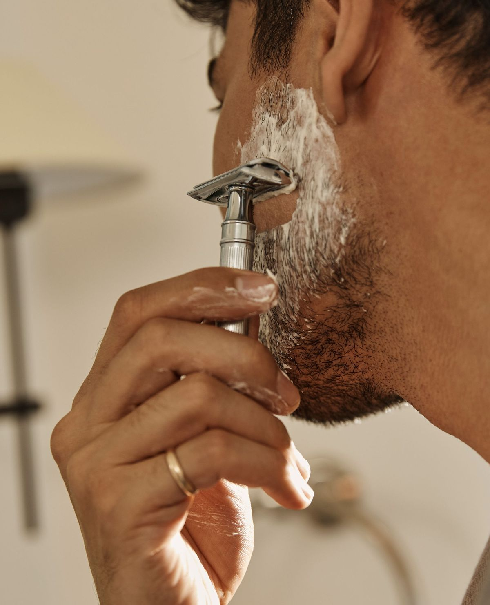
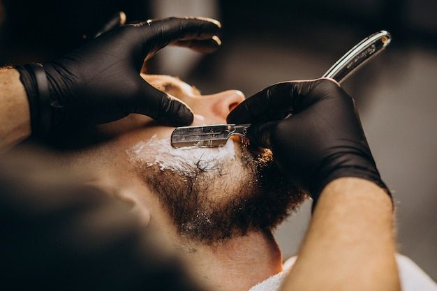

Mi az a borotválkozás utáni kipattogás?
A borotválkozás utáni kipattogás – más nevén borotválkozási kiütés – apró piros pöttyök, gyulladt szőrtüszők és égő érzés formájában jelentkezik az arc, a nyak vagy az áll területén. Sokak számára rendszeres kellemetlenség, amellyel évek óta küzdenek – anélkül, hogy tudnák, mit kellene máshogy csinálni.
A jelenség mögött legtöbbször nem a bőrtípus áll – hanem a borotválkozási szokások. Rossz technika, tompa penge, nem megfelelő előkészítés: ezek mind hozzájárulnak a kipattogáshoz. A jó hír az, hogy mindegyik orvosolható.

Mi okozza a kipattogást?
A borotválkozási kiütés mögött általában négy fő ok áll – és a legtöbb esetben egyszerre több is jelen van.
Rossz borotválási technika
Túl erős nyomás, ismételt húzás ugyanazon a területen, vagy a szőr növekedési irányával ellentétes borotválás – mind irritálják a bőrt. Az egyenes és egyenletes mozdulatokra kell törekedni, erőlködés nélkül.
Tompa penge
A tompa borotva nem vágja, hanem húzza a szőrt – ez az egyik leggyakoribb oka az irritációnak. Érdemes rendszeresen pengét cserélni; általában 5–7 borotválkozás után ajánlott az újítás.
Nem megfelelő előkészítés
Ha a bőr és a szőrszálak nincsenek megfelelően felpuhítva borotválkozás előtt, a penge sokkal nagyobb ellenállásba ütközik. Meleg vizes lemosás vagy meleg törülköző alkalmazása sokat segít.
Érzékeny bőr
Vannak bőrtípusok, amelyek eleve hajlamosabbak a kipirosodásra és a gyulladásra. Ilyen esetekben különösen fontos a kíméletes technika, a megfelelő termékek és az utóápolás.

Hogyan előzd meg a kipattogást?
A megelőzés nem bonyolult – néhány szokás bevezetésével drasztikusan csökkenthető az irritáció esélye.
- Melegítés borotválkozás előtt – meleg vizes lemosás vagy meleg törülköző 2–3 percre felnyitja a pórusokat, megpuhítja a szőrszálakat és csökkenti a húzást; ez az egyik leghatásosabb megelőző lépés
- Minőségi borotvakrém vagy -hab – a borotvakreám védi a bőrfelületet, csökkenti a súrlódást és segíti a pengét simán csúszni; ne borotválkozz száraz bőrön
- Éles, tiszta penge – tompa pengével ne borotválkozz; 5–7 használat után érdemes cserélni, vagy profi barbernél egyenes borotvát alkalmazni
- A szőr növekedési irányába borotválkozz – az ellen irányú borotválás ugyan simább eredményt ad, de sokkal nagyobb az irritáció kockázata érzékeny bőrnél
- Aftershave vagy nyugtató balzsam – borotválkozás után alkoholmentes aftershave vagy nyugtató arcbalzsam csökkenti a gyulladást és lezárja a pórusokat; az alkohol tartalmú változatok szárítanak és irritálnak
- Hidratálás – a bőrnek szüksége van nedvességre borotválkozás után; egy könnyű hidratáló krém segít a regenerálódásban
Mit tegyél, ha már kialakult a kipattogás?
Ha a kipattogás már megjelent, a legfontosabb a bőr nyugtatása és a további irritáció elkerülése.
- Ne borotváld újra azonnal – hagyd a bőrnek legalább 24–48 óra pihenőt, mielőtt újra nekiállsz
- Kerüld az alkoholos termékeket – az alkohol tartalmú aftershave és arc spray tovább szárítja és irritálja a gyulladt területeket
- Alkalmaz nyugtató krémet – aloe vera tartalmú vagy más nyugtató hatású arcápoló csökkenti a pirosságot és gyorsítja a gyógyulást
- Ne nyomogasd – a kipattogott területek nyomogatása fertőzést és hegesedést okozhat
- Hidratálj rendszeresen – a megviselt bőrnek extra nedvességre van szüksége a regenerálódáshoz
Ha a kipattogás visszatérő probléma, érdemes egy profi barbernél kipróbálni a hot towel shave-et – a gondos előkészítés és az egyenes borotva technikája sokkal kíméletesebb az arcon, mint az otthoni borotválkozás.
Irritációmentes borotválkozás profi kezekkel
Ha érzékeny a bőröd, vagy rendszeresen küzdesz borotválkozás utáni kipattogással – foglalj időpontot a Bosphorus barber shopba. A hot towel shave és a profi technika együttesen biztosítja a sima, irritációmentes eredményt.